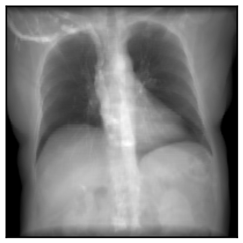
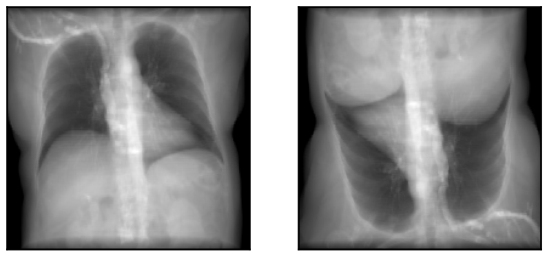
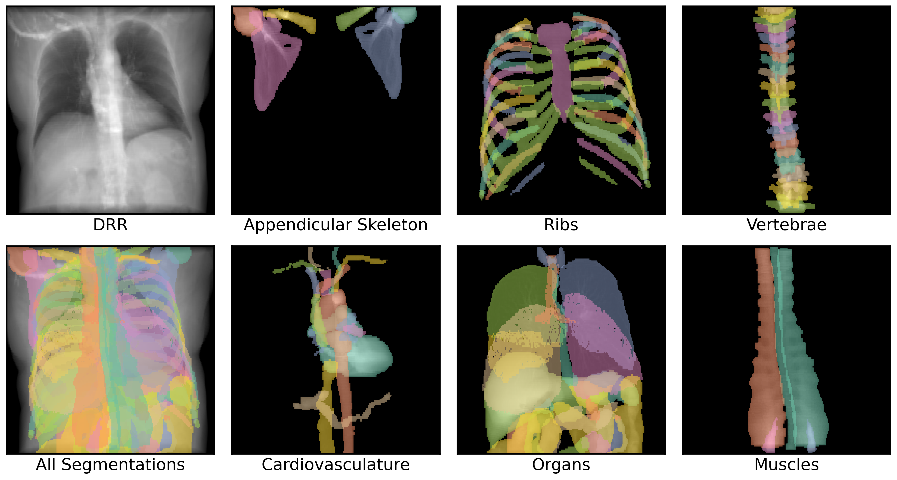
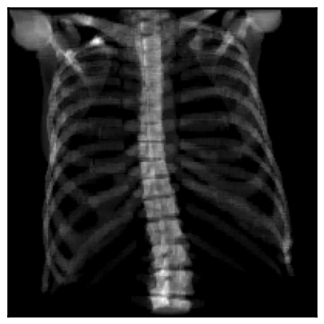
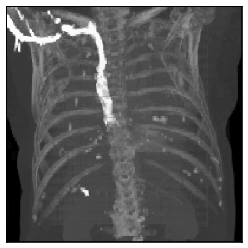
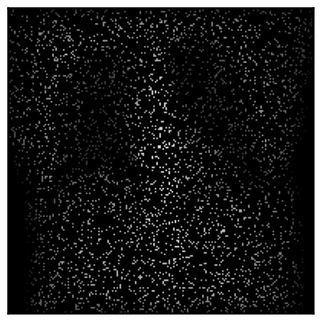

import matplotlib.pyplot as plt
import seaborn as sns
import torch
from diffdrr.data import load_example_ct
from diffdrr.drr import DRR
from diffdrr.visualization import plot_drr
sns.set_context("talk")How to use DiffDRR
In-depth tutorial of the
DRR module’s functionality
Rendering DRRs
DiffDRR is implemented as a custom PyTorch module.
All raytracing operations have been formulated in a vectorized function, enabling use of PyTorch’s GPU support and autograd. This also means that X-ray priojection is interoperable as a layer in deep learning frameworks.
Tip
Rotations can be parameterized with numerous conventions (not just Euler angles). See diffdrr.DRR for more details.
# Read in the volume and get its origin and spacing in world coordinates
subject = load_example_ct(bone_attenuation_multiplier=1.0)
# Initialize the DRR module for generating synthetic X-rays
device = torch.device("cuda" if torch.cuda.is_available() else "cpu")
drr = DRR(
subject, # A torchio.Subject object storing the CT volume, origin, and voxel spacing
sdd=1020, # Source-to-detector distance (i.e., the C-arm's focal length)
height=200, # Height of the DRR (if width is not seperately provided, the generated image is square)
delx=2.0, # Pixel spacing (in mm)
).to(device)
# Specify the C-arm pose with a rotation (yaw, pitch, roll) and orientation (x, y, z)
rot = torch.tensor([[0.0, 0.0, 0.0]], device=device)
xyz = torch.tensor([[0.0, 850.0, 0.0]], device=device)
img = drr(rot, xyz, parameterization="euler_angles", convention="ZXY")
plot_drr(img, ticks=False)
plt.show()
We demonstrate the speed of DiffDRR by timing repeated DRR synthesis. Timing results are on a single NVIDIA RTX 2080 Ti GPU.
25.4 ms ± 47 µs per loop (mean ± std. dev. of 7 runs, 10 loops each)Rendering multiple DRRs at once
The rotations tensor is expected to be of the size B D, where D is the number of components needed to represent the rotation (e.g., 3 for Euler angles, 4 for quaternions, etc.). The translations tensor expected to be of the size B D.
rot = torch.tensor([[0.0, 0.0, 0.0], [0.0, 0.0, torch.pi]], device=device)
xyz = torch.tensor([[0.0, 850.0, 0.0], [0.0, 850.0, 0.0]], device=device)
img = drr(rot, xyz, parameterization="euler_angles", convention="ZXY")
plot_drr(img, ticks=False)
plt.show()
Note that rendered DRRs have shape B C H W where - B is the number of camera poses passed to the renderer - C is the number of channels in the rendered images - H is the image height, specified in the constructor of the diffdrr.drr.DRR object - W is the image width, which defaults to the height if not otherwise specified
Typically, C = 1. However, we can have more channels if rendering individual anatomical structures (see the next section).
img.shapetorch.Size([2, 1, 200, 200])Rendering individual structures in separate channels
If the subject passed to diffdrr.drr.DRR also has a mask attribute (a torchio.LabelMap), we can use this 3D segmentation map to render individual structures in the DRR.
Method 1
The first way to do this is to set mask_to_channels=True in DRR.forward, which will create a new channel for every structure.
from diffdrr.pose import convert
# Note that you also have the option to directly pass poses in SE(3) to the renderer
rot = torch.tensor([[0.0, 0.0, 0.0]], device=device)
xyz = torch.tensor([[0.0, 850.0, 0.0]], device=device)
pose = convert(rot, xyz, parameterization="euler_angles", convention="ZXY")
img = drr(pose, mask_to_channels=True)We used TotalSegmentator v2 to automatically segment the example CT. This dataset has 118 classes. Therefore, the output image has C = 119 (the zero-th channel is a rendering of the background).
img.shapetorch.Size([1, 119, 200, 200])We incur a small amount of additional overhead to partition these channels during rendering:
38.8 ms ± 137 µs per loop (mean ± std. dev. of 7 runs, 10 loops each)We can also visualize all of these channels superimposed on the DRR. Note that summing over the channel dimension recapitulates the original DRR.
Code
from diffdrr.visualization import plot_mask
# Relabel classes in the TotalSegmentator dataset
groups = {
"skeleton": "Appendicular Skeleton",
"ribs": "Ribs",
"vertebrae": "Vertebrae",
"cardiac": "Cardiovasculature",
"organs": "Organs",
"muscles": "Muscles",
}
# Plot the segmentation masks
fig, axs = plt.subplots(
nrows=2,
ncols=4,
figsize=(14, 7.75),
tight_layout=True,
dpi=300,
)
im = img.sum(dim=1, keepdim=True)
plot_drr(im, axs=axs[0, 0], ticks=False, title="DRR")
plot_drr(im, axs=axs[1, 0], ticks=False, title="All Segmentations")
for (group, title), ax in zip(groups.items(), axs[:, 1:].flatten()):
jdxs = subject.structures.query(f"group == '{group}'")["id"].tolist()
im = img[:, jdxs]
plot_drr(im.sum(dim=1, keepdim=True), title=title, axs=ax, ticks=False)
masks = plot_mask(im, axs=ax, return_masks=True)
for jdx in range(masks.shape[1]):
axs[1, 0].imshow(masks[0, jdx], alpha=0.5)
plt.show()
Method 2
If we only care about a subset of the structures, we can instead partition the 3D CT prior to rendering. Note that this method is compatible with different rendering backends.
# Only load the bones in the CT (and the costal cartilage, but it looks weird without it)
structures = ["skeleton", "ribs", "vertebrae"]
labels = subject.structures.query(f"group in {structures}")["id"].tolist()
subject = load_example_ct(labels=labels)
drr = DRR(subject, sdd=1020, height=200, delx=2.0).to(device)
img = drr(pose)
plot_drr(img, ticks=False)
plt.show()
Because we are rendering all structures at once, we don’t incur additional overhead.
25.4 ms ± 20.8 µs per loop (mean ± std. dev. of 7 runs, 10 loops each)Changing the appearance of the rendered DRRs
Following the implementation of DeepDRR, we threshold CTs according to Hounsfield units:
air: HU ≤ -800soft tissue: -800 < HU ≤ 350bone: 350 < HU
Increasing the bone_attenuation_multiplier upweights the density of voxels thresholded as bone. That is,
bone_attenuation_multiplier = 0completely removes bonesbone_attenuation_multiplier > 1increases the contrast of bones relative to soft tissue
imgs = []
bone_attenuation_multipliers = [0.0, 1.0, 2.5, 5.0]
for bone_attenuation_multiplier in bone_attenuation_multipliers:
subject = load_example_ct(bone_attenuation_multiplier=bone_attenuation_multiplier)
drr = DRR(subject, sdd=1020.0, height=200, delx=2.0).to(device)
imgs.append(drr(pose))
fig, axs = plt.subplots(1, 4, figsize=(14, 7), dpi=300, tight_layout=True)
plot_drr(torch.concat(imgs), ticks=False, title=bone_attenuation_multipliers, axs=axs)
plt.show()Change reducefn
You can also perform a max-intensity X-ray projection by setting reducefn="max".
subject = load_example_ct()
drr = DRR(
subject,
sdd=1020,
height=200,
delx=2.0,
reducefn="max", # Change from default `sum` to `max`
).to(device)
img = drr(pose)
plot_drr(img, ticks=False)
plt.show()
Alternatively, you can implement a custom reducefn! Note that the internal img tensor stores per-ray samples in the last dimension, so reduce functions should operate on the last dimension.
def reducefn(img):
return img.sort(descending=True).values[..., :50].sum(dim=-1)
subject = load_example_ct()
drr = DRR(
subject,
sdd=1020,
height=200,
delx=2.0,
reducefn=reducefn,
).to(device)
img = drr(pose)
plot_drr(img, ticks=False)
plt.show()Rendering sparse DRRs
You can also render random sparse subsets of the pixels in a DRR.
Tip
Sparse DRR rendering can be useful in registration and reconstruction tasks when coupled with a pixel-wise loss, such as MSE.
# Make the DRR with 10% of the pixels
subject = load_example_ct()
drr = DRR(
subject,
sdd=1020,
height=200,
delx=2.0,
p_subsample=0.1, # Set the proportion of pixels that should be rendered
reshape=True, # Map rendered pixels back to their location in true space - useful for plotting, but can be disabled if using MSE as a loss function
).to(device)
# Make the DRR
img = drr(pose)
plot_drr(img, ticks=False)
plt.show()
5.15 ms ± 522 µs per loop (mean ± std. dev. of 7 runs, 100 loops each)Using different rendering backends
DiffDRR can also render synthetic X-rays using trilinear interpolation instead of Siddon’s method. The key argument to pay attention to is n_points, which controls how many points are sampled along each ray for interpolation. Higher values make more realistic images, at the cost of higher rendering time.
drr = DRR(
subject,
sdd=1020,
height=200,
delx=2.0,
renderer="trilinear", # Set the rendering backend to trilinear
).to(device)
imgs = []
n_points = [100, 250, 500, 1000]
for n in n_points:
img = drr(pose, n_points=n)
imgs.append(img)
fig, axs = plt.subplots(1, 4, figsize=(14, 7), dpi=300, tight_layout=True)
img = torch.concat(imgs)
axs = plot_drr(img, ticks=False, title=[f"n_points={n}" for n in n_points], axs=axs)
plt.show()A conventional pinhole camera
Convert DiffDRR camera poses to a traditional pinhole camera using the convention implemented in Kornia.
from diffdrr.utils import get_pinhole_camera# Set the orientation
orientation = "AP"
multiplier = -1.0 if orientation == "PA" else 1.0
# Make the pose
rot = torch.tensor([[0.0, 0.0, 0.0]], device=device)
xyz = torch.tensor([[0.0, multiplier * 850.0, 0.0]], device=device)
pose = convert(rot, xyz, parameterization="euler_angles", convention="ZXY")
# Render img1
subject = load_example_ct(orientation=orientation)
drr = DRR(subject, sdd=1020.0, height=200, delx=2.0, renderer="trilinear").to(device)
img1 = drr(pose)
# Render img2
carm = get_pinhole_camera(drr, pose)
subject = load_example_ct(orientation=None)
drr = DRR(
subject, sdd=multiplier * 1020.0, height=200, delx=2.0, renderer="trilinear"
).to(device)
img2 = drr(carm.pose.cuda())
# Plot the images and the differences
plot_drr(torch.concat([img1, img2, img1 - img2]), ticks=False)
plt.show()# Set the orientation
orientation = "PA"
multiplier = -1.0 if orientation == "PA" else 1.0
# Make the pose
rot = torch.tensor([[0.0, 0.0, 0.0]], device=device)
xyz = torch.tensor([[0.0, multiplier * 850.0, 0.0]], device=device)
pose = convert(rot, xyz, parameterization="euler_angles", convention="ZXY")
# Render img1
subject = load_example_ct(orientation=orientation)
drr = DRR(subject, sdd=1020.0, height=200, delx=2.0, renderer="trilinear").to(device)
img1 = drr(pose)
# Render img2
carm = get_pinhole_camera(drr, pose)
subject = load_example_ct(orientation=None)
drr = DRR(
subject, sdd=multiplier * 1020.0, height=200, delx=2.0, renderer="trilinear"
).to(device)
img2 = drr(carm.pose.cuda())
# Plot the images and the differences
plot_drr(torch.concat([img1, img2, img1 - img2]), ticks=False)
plt.show()